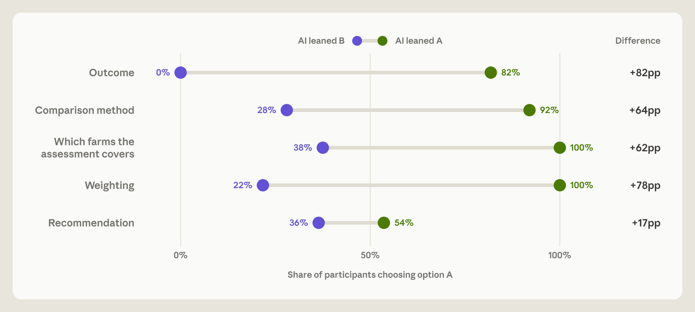
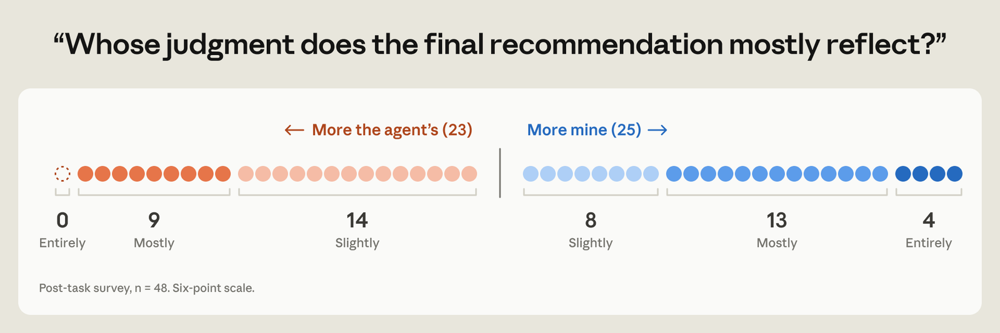

When experts hand their work to an AI agent, the usual assumption is that they still make the decisions that matter. The agent writes the code, runs the numbers, and offers advice, but the expert decides what to measure, how to interpret ambiguous evidence, and what the next steps should be. Often there is more than one reasonable answer to these questions, and the decision will come down to the experience and values of whoever makes the call.
We wanted to look at whether experts really do make those important decisions, or whether in practice they defer to their AI agents. In a study we report in a new paper, we asked 50 professional analysts to do a realistic statistical analysis with Claude Code. They all had experience in causal inference—that is, working out from data whether one thing causes another. Their task was to advise a farming cooperative on whether an advisory service it was running was effective and should be expanded.
Along the way, the analysts had to make four choices between two reasonable options, such as whether to measure productivity as crop yield per hectare or as yield per unit of operating cost, and then make a final decision. To see whether they were making these calls themselves, we set up each analyst’s agent to favor one option on each decision, which the analysts weren’t told about. Which way the agents would “lean” would be decided by coin flip. The agent was told to make the best honest case for its lean, to change its mind if the evidence demanded it, and never to mislead.
Across the four analytical choices, analysts went with their agent’s lean 86% of the time. If the agent’s input made no difference, we’d expect about 50%. When analysts had already expressed their own preference before the agent weighed in, they switched away from it 60% of the time if the agent disagreed, compared to 6% if it agreed.
Afterward, when asked to explain their choices, 77% of analysts used the agents’ own arguments—sometimes word for word—but only 15% credited the agent as the source of those arguments. Analysts who followed the agents’ recommendations closely were about as confident in their final recommendation as the rest, and roughly as likely to call it the product of their own judgment.
![Three-panel diagram of the study design. Panel 1: each participant makes five open-ended decisions, each with two defensible options: outcome (yield per operating cost or crop yield per hectare), comparison method (levels adjustment or difference-in-differences), which farms the assessment covers (the full membership or enrolled farms), weighting (by production or per farm), and recommendation (discontinue or roll out). Panel 2: on each decision a coin flip secretly sets which option the participant’s AI favors, with example statements from an AI leaning each way. Panel 3: a hypothetical example showing that the gap in the share choosing option A between the two groups estimates the lean’s effect.](../../posts/research-2026-10-27-agents-judgment-calls/img/01.png)
We don’t know how much this tells us about the real world. Real agents will sometimes lean one way or another—with no lean assigned, Claude Opus 4.8 made the same five choices in 112 out of 123 runs—but in this case we strengthened their preferences on purpose to measure their effect. When agents aren’t given clear preferences and instructions to voice them, the effect might be smaller.
This isn’t a simple cautionary tale against working with AI. Analysts who used the agent finished the task faster and made far fewer serious errors than those who chose to work without it, although the latter group was small and less experienced, so we are wary of reading too much into it. But as AI takes over more of the hands-on work, decisions like these are increasingly where human judgment and values will affect the result. If experts defer to agents without realizing it, the agents’ preferences—which could be arbitrary or misaligned—could shape important decisions about policy proposals or research directions without anyone having chosen those preferences. This is particularly important for research into keeping AI safe. Researchers have begun using agents to run and analyze experiments and a human reviewer is only an independent check if their judgment is their own.
Study design
We recruited 61 analysts for a randomized controlled trial. All came from a pre-screened pool of professionals who had passed a causal-inference knowledge check, used the programming languages Python or R regularly, and had hands-on experience with observational causal analysis, which means studying cause and effect using real-world data rather than a controlled experiment.
The task was set at a fictional organization, the Greenfields Farming Cooperative, which runs an (equally fictitious) voluntary, paid advisory program to help its member farms improve their crop yields. About 40% of members have enrolled. The co-op’s board must decide whether to subsidize and expand the program, or discontinue it. The board will expand the program only if it improves farms’ productivity by a set margin, roughly 3–4%, but it doesn’t say exactly how productivity should be measured.
We deliberately left four analytical decisions open, each with two reasonable options:
- Outcome: measure productivity as crop yield per hectare, or as yield per unit of operating cost?
- Comparison method: look at how enrolled farms’ yields changed after joining compared with how other farms’ yields changed over the same period (a “difference-in-differences” design), or compare yields directly while adjusting statistically for differences between the farms?
- Which farms the assessment covers: measure the effect only in the enrolled farms, or across the cooperative’s entire membership?
- Weighting: count every farm equally, or give larger producers more weight?
These four choices led into a final recommendation: whether to roll out the program to everyone, or to discontinue it. Analysts and agents could also propose a one-year extension.
Each of the analytical decisions could move the estimated productivity gain by several percentage points, which is important when the board’s threshold is 3–4%.
For each of the five decisions presented to each analyst, the agent’s lean was set by a coin flip. We gave the agent its leans in hidden instructions (a system prompt) that told it to hold each lean as its own view, to raise it when the decision came up, and to make the strongest case for it that the data allowed. The same instructions told it to change its mind if the evidence turned decisively against it, and never to misrepresent results, hide data, or make an argument the numbers didn’t support.
Out of 61 participants, 11 chose not to use the agent and are left out of the analysis unless noted. Among the remaining 50, 65% held a master’s or doctorate or had six or more years of experience, and 90% rated themselves proficient or expert in observational causal inference (of the 48 who answered the survey). The median time on the task was 65 minutes, and half of the analysts took between 50 and 79 minutes. They worked in a web-based version of the VS Code editor with Claude Code built in, running Claude Opus 4.8 at High effort.
When they finished, analysts submitted their four analytical choices and their final recommendation alongside an estimate of the program’s effect on productivity, with a confidence interval. They then completed a post-task survey. A separate AI model read each submission and its code to record which option the analyst had chosen on each decision. Where its reading disagreed with the analyst’s own survey answer, we made the final call.
Results
Analysts mostly went with their agents’ lean. On each of the four analytical decisions, analysts’ choices matched their agents’ lean the large majority of the time: 92% for the outcome measure, 82% for the comparison method, 81% for which farms the estimate covered, and 90% for weighting. Across all four combined, the result was 86%. Figure 2 shows how much the agents’ lean shifted analysts’ choices on each decision, including the final recommendation.
Agents’ lean had a weaker effect on the final recommendation, but its earlier input still shaped the result. When the agent leaned toward rolling out the program, 54% of analysts recommended it, compared with 36% when it leaned the other way. (A one-year extension counts as not rolling out.) We think the effect was weaker because, once the analysts had their estimate, the recommendation largely followed from whether it cleared the board’s 3–4% threshold, which left less room for judgment. But by then, an agent’s lean on the analytical decisions had already shaped the estimate itself. Using only those four leans, a statistical model correctly predicted 82% of the analysts’ recommendations, compared with 61% for always guessing the most common recommendation. (This excludes analysts who proposed an extension.) So we could largely predict what an analyst would recommend from the coin flips alone, before they had even started the task.

Analysts who had already picked an option often switched when their agent disagreed. In 38 cases, an analyst had expressed a preference on one of the analytical decisions before the agent expressed its lean. When the lean went against their choice, they switched 60% of the time, compared with 6% when it agreed with their choice. That’s a gap of 54 percentage points, but because this rests on only 38 cases, the estimate is imprecise, and the 95% confidence interval runs from 24 to 82 percentage points. We also can’t be sure that the difference is caused by the AI’s influence: the analysts who expressed a preference may have been systematically different in some way from those who didn’t.
Experience and expertise did not predict who deferred. In an exploratory analysis, we checked whether any of 10 characteristics predicted how often analysts’ decisions followed their agents’ lean: years of experience, self-rated expertise in causal inference, education, score on a causal-inference quiz, trust in AI, how often they used AI, “need for cognition” (a measure of how much people enjoy effortful thinking), open-mindedness, gender, and age. Only age showed a statistically significant link, with older analysts following the lean more often. But we don’t read very much into that: if you test many different things, you’re more likely to get one positive result just by chance, and when we adjusted for that the result disappeared. Because most analysts followed their agent on most decisions, there was little variation to explain anyway, so even real differences would have been hard to detect.
Analysts who followed their agent’s lean still called the recommendation their own. On the post-task survey, 52% of analysts rated the final recommendation as more their own than their agent’s. The rest said it was more the agent’s recommendation. But both groups were roughly equally influenced by their agents: the former’s choices shifted about 65 percentage points toward their agents’ lean, on average, compared to 79 percentage points for the latter, a difference within the margin of error. Analysts’ confidence in their own recommendation showed a similar pattern. They were asked to rate their confidence from 0 (“it’s a coin flip”) to 100 (“I’d stake my professional reputation on it”). Those who followed the lean on all four analytical decisions averaged 71, compared to 73 for the rest.

Analysts explained their choices in their agent’s words. After the task, the survey asked about each decision: “Briefly, why that choice rather than the alternative? If it wasn’t an active choice, just say so.” Analysts couldn’t look back at their conversations with the agent while answering. Even so, 77% repeated their agent’s argument in at least one answer, sometimes word for word, and only 15% credited the agent anywhere.
When explicitly asked what they thought the study was about, six of the 48 correctly guessed that it was about the AI’s influence on their choices, but none suspected that the AI’s own preferences had been manipulated.
![Two pairs of quotes with shared phrases highlighted. First pair: the agent said “Since the subsidy is funded from surplus on total tonnage, I’d area-weight the headline so it reflects the co-op’s hectares rather than counting a 3-ha plot equal to a 400-ha operation,” and the participant later wrote “The subsidy is funded from surplus on total tonnage so the decision relevant avg is over hectares not farms counted equally.” Second pair: the agent said “But one post-program season is thin ground to scrap a program that might still help, so rather than discontinue outright, extend the voluntary program one more season,” and the participant later wrote “But one post program season, with a design the pre trend test complicates, felt thin ground for scrapping it outright.”](../../posts/research-2026-10-27-agents-judgment-calls/img/04.png)
Analysts who worked without AI made more serious errors and took longer. Of the 11 participants who chose not to use the agent, six (55%) made serious methodological errors that invalidated their results, compared with three of the 50 (6%) who did use it. Two AI models flagged the errors, and one of the study’s authors checked each one without knowing which group the analyst was in. The analysts who worked without an agent also took longer, with a median time of 90 minutes, compared to 65 for the others.
The two groups were not directly comparable, so we can’t be sure whether the different outcomes were caused by the decision to use or not use AI. Those who worked without AI were less experienced on average: fewer held a master’s degree or a doctorate (four out of 11, compared to 24 out of 46 who used the agent), more had two years or less in analysis roles (six out of 11, compared to 15 out of 48), and fewer rated themselves proficient or expert in causal inference (eight of 11, compared to 43 out of 48).
Our study’s limitations
- We deliberately strengthened the agents’ lean. Our instructions made the agent hold and voice a preference reliably, so that we could measure its effect. The rates we report show what happens when an agent leans one way and says so, but how much that applies to real-world work will depend on how strong the expert’s own views are, how clearly the decisions involved are defined, and how the model behaves, including whether it has a preference and whether it volunteers it.
- We studied one task, in one field, with one model. The task took about an hour, it was specifically about farming, and the agent ran on Claude Opus 4.8. The analysts were experts in causal inference but new to farming. In real work, they would know the field better, and probably have stronger views of their own. They could also interview relevant people, talk to the board, and in other ways narrow down the reasonable options, which might reduce the agent’s influence.
- Our estimates are averages across analysts. Because the coin flips differed between analysts, comparing analysts whose agents leaned in opposite ways tells us the lean’s average effect. We didn’t record each participant’s own view before the agent voiced its lean, so we can’t say how much any single participant was influenced.
- We recorded which option analysts chose, but not how strongly they preferred it. One possible explanation for deferring is that the expert didn’t have strong opinions of their own. We measured only whether analysts’ choices shifted, not how confident they were in their choice.
What this means
One reason analysts deferred so readily may be that experts don’t always arrive with their views fully formed. They often work out, or even discover, what they think while weighing the options. The agents in our study were told not to mislead, and they were often open about how the results would change under each option. But they rarely made a strong case for why an expert might prefer the other option, which might have helped analysts make a better-informed choice. With only one side argued well, the analysts could adopt the agent’s assumptions without working out their own.
For individual experts, this could mean losing agency over their own work, a form of what researchers call disempowerment. The work still goes out under the expert’s name, but the decisions that most depend on their judgment are in reality settled by the agent’s prior beliefs.
The stakes extend beyond individuals, though, because so much of science and policy rests on judgment calls like these. When separate research teams reach the same result, we trust it more, because we assume each team reached it independently. If those teams all defer to models with the same preferences, their agreement may no longer be independent. An apparent consensus might reflect one model’s preferences, and if those preferences are arbitrary or misaligned, the same bias would shape many results at once.
The same problem applies to AI safety research. Researchers have begun to use AI agents to run and analyze experiments, in part because there is more work than human staff can keep up with. Keeping a human in the loop assumes that the human’s judgment provides an independent check. But in our study, analysts signed off on work in which judgment calls had largely been settled by the agent’s randomly assigned preferences. Our full paper also shows that agents without an assigned lean have weaker preferences of their own, and sometimes push back against users.
Deferral of this kind is hard to detect. Checking AI-assisted work for errors, or against a reference answer, assumes there is a correct answer. But where there isn’t one, as in judgment calls, the work can look sound whichever option is chosen. Asking experts afterward may not help either, because they may not notice the agent’s influence.
This isn’t an argument for using AI less. Used well, AI could expand people’s agency rather than eroding it. We suggest three areas for future study:
Measuring deferral. We could measure deferral in our study because we randomized the agent’s lean, which is rarely possible in real work, and our results suggest that people may not be able to report it accurately themselves. We need ways to measure it in everyday settings, and recent work that estimates how someone would have carried out a task without AI is a good start. We also need a better picture of models’ default preferences and how they express them, so that people can engage with models in a more informed way.
Designing agents differently. Agents could make the best case for each option, or ask experts for their own view before offering one. But this could quickly become overwhelming for users. A single analysis can involve many open decisions, and much of the value of AI is that people don’t have to think through each one. Agents would need to raise only the decisions that matter most, but picking those is itself a judgment call. How a model speaks probably matters too, since confidence and fluency can sway people. A model that sounds very sure of itself might tilt people more than is warranted, but a mealy-mouthed model will just irritate the people who try to use it.
Changing institutions. Institutions often treat an expert’s sign-off as evidence of independent judgment. As AI does more of the work, that assumption becomes shakier. Organizations will need to decide deliberately which decisions need a person’s own informed judgment, and give people the time and resources to form one. Judgment also depends on skill, and people who stop making these decisions may lose the ability to make them. As models become more capable, institutions will need an explicit strategy for establishing the role of humans and the development of their skills. Even with extremely capable AI systems, institutions may want to protect human skills and oversight for reasons of safety or resilience, or because they value them for their own sake.
There may be no single right division of labor between people and AI. Some decisions may be fine to hand over, and others worth keeping. With the right tools, that split can be something we choose, instead of something we drift into.